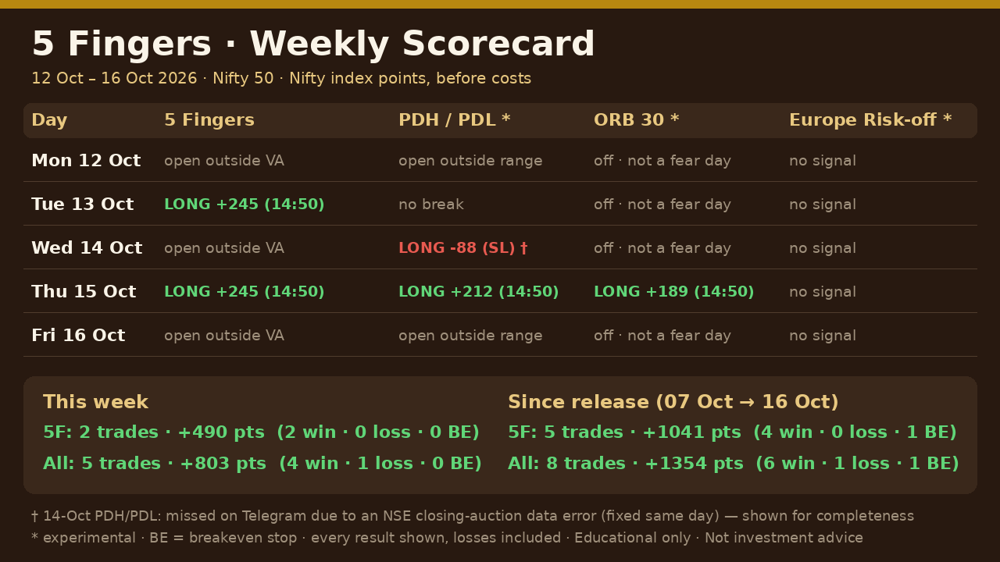

Scorecards
Every live result since public release — losses included.
Public release (07 Oct 2026) முதல் ஒவ்வொரு live முடிவும் — நஷ்டம் உட்பட.
How we count
- Nifty 50 index points, before costs (brokerage, taxes, slippage not deducted).
- Results as sent live on the Telegram channel. One trade per tool per day.
- Tools: 5 Fingers, and experimental PDH/PDL, ORB 30, Europe risk-off.
- Published every Friday after market close.
Running total
| Week | 5 Fingers | All tools |
|---|---|---|
| 07 – 09 Oct 2026 | 3 trades · +551 | 3 trades · +551 |
| 12 – 16 Oct 2026 | 2 trades · +490 | 5 trades · +803 |
| Since release | 5 trades · +1,041 | 8 trades · +1,354 |
Two weeks is far too short to judge any trading system. Judge it over months.
Week 2 · 12 – 16 Oct 2026
5 Fingers: 2 trades, +490 · All tools: 5 trades, +803 (4 win · 1 loss)

Week 1 · 07 – 09 Oct 2026
Public release on Wednesday 07 Oct. 5 Fingers: 3 trades, +551 (2 win · 1 breakeven).
| Day | 5 Fingers |
|---|---|
| Wed 07 Oct | Breakeven stop · 0 |
| Thu 08 Oct | +316 |
| Fri 09 Oct | +235 |
Scorecards show past results of fixed rules. They are not a promise of future profit and not a recommendation to trade.